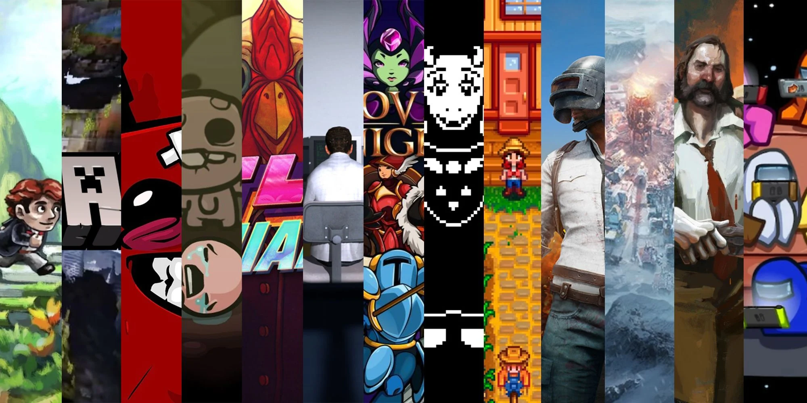
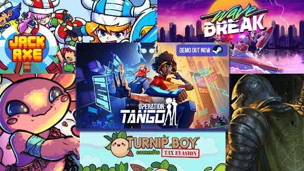

What is an indie video game?
A simple definition of what an Indie game is: is that an indie game is created by a small team of developers or by individuals without the financial and technical backing and support of a larger company. Typically larger game publishers who release AAA games have huge teams and a large sum of money they can spend on their games. But indie developers typically take time off of their daily lives to work on their game ideas and in many cases have created amazing works of art that will always be remembered by gamers worldwide. Some cases of popular indie games that many gamers know worldwide are Undertale, Stardew Valley, and Minecraft to name a few. (Minecraft is a special case where it was once an indie game but no longer is due to Microsoft purchasing them).
About Indie Gamers
We are a company dedicated to the promotion and sale of indie video games that seeks to contribute to the increase in demand by the video game community of different genres, bringing our clients games with very good reviews at an affordable prices.


Founders:
- Abhikaran Singh
- Bilal Khokhar
- Jean Begazo
- Kuldeep Kaur Sandhu